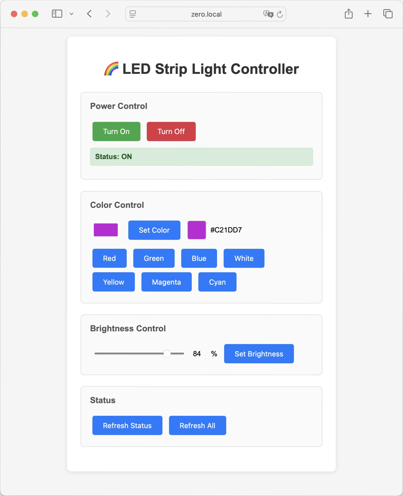

🌈 LED Strip Light
Welcome! This project lets you drive RGB LED strips from a Raspberry Pi Zero W.
It includes:
- Web-based REST API (Flask) for remote control (on/off, color, brightness, effects)
- Web-based interface for manual remote control
- Homebridge integration for Apple HomeKit and Siri voice control
- Command-line interface for scripting and manual control
- Multiple built-in LED effects (breathing, fade, color cycle, random, and more)
- Time-based color profiles and scheduled automation (systemd, cron)
- Modular, testable Python codebase with hardware abstraction and full unit test suite
Preview

Web control interface
Getting Started
- Installation:
pip install -r requirements.txt
- Configuration: edit
config.conf in the src directory
- Usage:
./run.py profile
Documentation